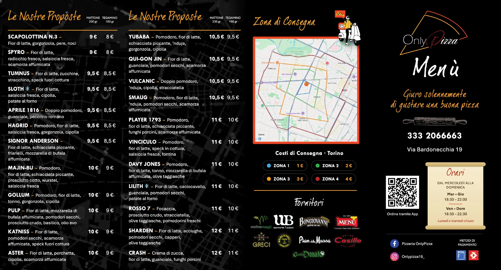
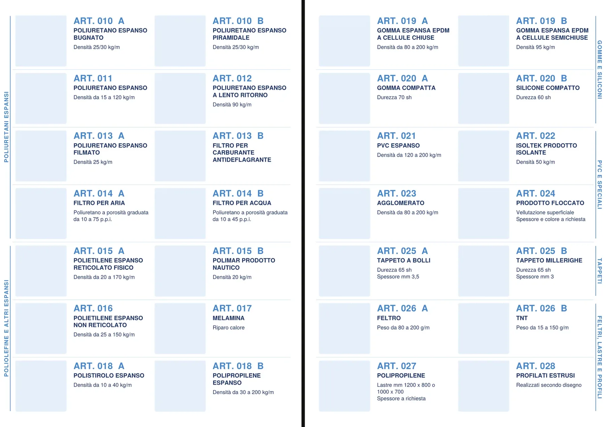

Grafica editoriale · con Sebastyan Buryas
Pieghevoli
Due pieghevoli di cui ho curato le grafiche, impaginati insieme a Sebastyan: il menu di una pizzeria e un campionario per un'azienda di materiali espansi. Aprili.
OnlyPizza · Menù
Il menu di una pizzeria, ridisegnato come pieghevole: copertina, pizze tradizionali e proposte, dolci, bibite, la sezione “La tua fantasia” e la mappa delle zone di consegna con i quattro costi. Fondo scuro e arancio come unico accento, così nomi e prezzi si leggono al volo.
- Cosa ho fattoLoghi e personaggi.
- ConImpaginato e struttura delle ante di Sebastyan Buryas.
- FormatoFoglio aperto a 4 ante, fronte e retro.
- StatoProposta per il cliente.
I fogli aperti


F.T.S. · Campionario
Un catalogo a cartellina per F.T.S. Foam Technical Service. La copertina presenta le sei famiglie di prodotto attorno a un anello; il retro racconta l'azienda e riporta i contatti. All'interno ogni articolo ha un riquadro per il campione di materiale vero, perché i campioni cambiano spesso.
- Cosa ho fattoGrafiche di copertina e retro.
- ConStruttura della fustella e impaginato di Sebastyan Buryas.
- FormatoFoglio orizzontale piegato su un dorso centrale.
- StatoIn lavorazione: riquadri dei campioni ancora vuoti.
I fogli aperti


Facciamo qualcosa insieme.